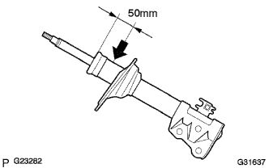

フロントショックアブソーバー W/コイルスプリング 廃却
印刷
準備品一覧
1. ショック アブソーバASSY FR LH廃却
穴あけによる廃却方法
ピストンロッドを伸ばした状態にして、バイスなどで斜めに固定する。

ショックアブソーバ上端部から約５０ｍｍの場所に金ノコなどを使用して、ゆっくり穴を開けてガスを抜く。
■ 注 意 ■
抜け出すガスは無色、無臭、無害である。
ガスの勢いで切り粉などが飛び出すことがあるので、金ノコの上にウエスなどをかぶせた状態で穴を開ける。